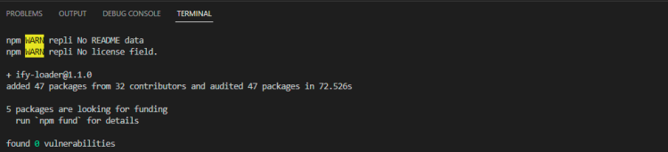

Autre librairie spécialisée dans la création de graphiques : Plotly.js.
Comme Chart.js, Plotly.js est une librairie qui viendra vous aider à enrichir vos pages de graphiques responsives et dynamiques. Cette librairie est aussi open source. L’une des grandes différences se situera dans les modalités d’installation.
De plus, elle a la caractéristique d’être disponible pour de nombreux langages de programmation.
Il y a bien entendu la possibilité d’installer Plotly.js via NPM. Pour cela il est nécessaire d’ouvrir votre terminal et de taper la commande suivante :
See the Pen Untitled by OpenSpirit (@OpenSpirit) on CodePen.
Elle s’installe aussi via le cdn, ainsi que via le repos de GitHub. Ces démarches ayant été vues en amont avec l’introduction de Chart.js, il est plus important de voir la dernière façon d’installer cette librairie, via webpack.
Dans le cadre de l’installation de Plotly.js, un élément de différenciation existe avec Chart.js : il est possible d’installer Plotly.js via webpack.
La procédure sera donc un peu plus complexe si vous souhaitez utiliser webpack pour installer cette librairie, néanmoins, une fois maîtrisée, elle est assez simple à mettre en place.
L’installation via webpack nécessite un certain nombre de démarches, la première est l’installation de ify-loader en utilisant npm.
See the Pen Untitled by OpenSpirit (@OpenSpirit) on CodePen.
L’installation de cette dépendance devrait vous donner le visuel suivant :
Ify -loader téléchargé, il sera nécessaire d’installer webpack dans votre projet :
See the Pen Untitled by OpenSpirit (@OpenSpirit) on CodePen.
Si l’installation s’est bien déroulée, vous devriez avoir le visuel suivant :
Enfin, vous devrez configurer webpack en ajoutant un script à votre webpack.config.json. Il vous sera donc nécessaire d’ajouter le code ci-dessous.
See the Pen Untitled by OpenSpirit (@OpenSpirit) on CodePen.
Comme pour Chart.js, la première démarche est la création d’un fichier HTML. Entre les 2 balises <body></body>, il est nécessaire de mettre une balise <div></div>.
See the Pen Untitled by OpenSpirit (@OpenSpirit) on CodePen.
Cette <div> installée, il sera nécessaire de créer notre fichier Javascript sur lequel l’ensemble des données sera injecté.
See the Pen Untitled by OpenSpirit (@OpenSpirit) on CodePen.
Lien ReplitPlotly.newPlot(graphDiv, data, layout); cette classe est un impératif dans Plotly.js : elle s’introduit toujours dans une <div>. Elle contient l’ensemble des éléments du graphiques, comme les données, le titre, l’axe des x et des y, etc.
La variable layout est incluse dans un objet, l’objet layout servira à stocker des variables comme le titre, le départ à zéro du graphique, etc.
Il est possible de paramétrer l’ensemble du graphique pour obtenir un rendu correspondant à nos attentes. La librairie comptant plus de 40 types de graphiques, il est plus intéressant de s’attarder sur la méthode pour ajouter une ou plusieurs options. Pour cela, il sera nécessaire de déclarer une variable qui dans un objet contiendra les options voulues, telle que le nom, le responsive, etc. Observez le code ci-dessous, il a pour objectif de permettre un zoom et un scroll.
See the Pen Untitled by OpenSpirit (@OpenSpirit) on CodePen.
Lien ReplitLa mise en place des options se fait dans une variable « Layout », dans l’exemple au-dessus, il s’agit de l’option scroll et zoom mais la démarche serait la même avec des aspects responsifs.
Voici un exemple de projet avec Plotly.js.
See the Pen Untitled by OpenSpirit (@OpenSpirit) on CodePen.
Lien ReplitL’utilisation de ces morceaux de codes vous permettront de réaliser votre premier graphique en ligne avec Plotly.js.